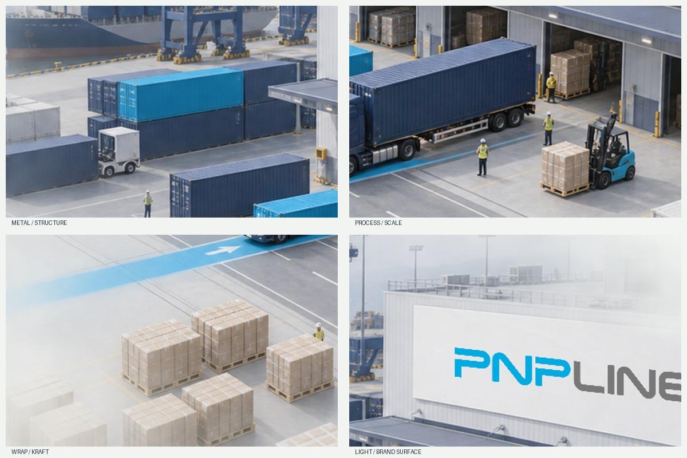
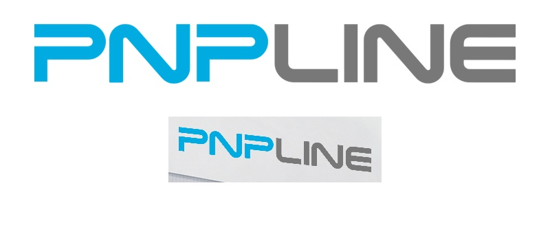

절제된 재질과 선명한 파란색.
밝은 콘크리트, 네이비 금속, 크라프트 상자, 선택적으로 적용한 PNPLINE 파란색 경로와 브랜드 표면을 사용합니다.
 VISUAL DEVELOPMENT / 061
VISUAL DEVELOPMENT / 061DAYLIGHT LOGISTICS · CONCEPT V1
중국 출발부터 미국 풀필먼트까지. 밝은 산업 미니어처 세계로 여섯 물류 장면을 연결합니다.
콘셉트 이미지 · 내부 검토용
구도 방향 선정 완료 / 개별 자산은 시각 승인 전
검토 자료를 불러오는 중입니다…
01 / MATERIAL & LIGHT
참고 이미지의 공간 깊이, 산업 재질, 선명한 브랜드 표면을 활용합니다. 녹색, 이중 사선 기호, 원본 레이아웃은 디자인에 포함하지 않습니다.
밝은 콘크리트, 네이비 금속, 크라프트 상자, 선택적으로 적용한 PNPLINE 파란색 경로와 브랜드 표면을 사용합니다.

전경의 공정, 중경의 운송, 후경의 창고로 깊이를 만듭니다. 약간 높은 사선 시점과 소수의 작업자가 미니어처 비례감을 보여 줍니다.
출처, 선택 기준, 사용 조건 보기 ↗02 / THREE STUDIES
A는 선정한 방향입니다. B는 해 질 녘 조명, C는 하이 앵글 시점을 비교하기 위한 안이며, 여섯 장면의 시각 원칙에 섞지 않습니다.
방향 선정은 생성 이미지의 승인을 뜻하지 않습니다. 세 안은 각각 생성되어 형태와 카메라 위치가 엄밀하게 통제된 비교가 아닙니다. 미니어처 느낌, 공정, 브랜드 선명도를 함께 검토해야 합니다.
03 / ORIGINAL WORDMARK

파란색 PNP와 회색 LINE의 글자 형태와 비례를 유지합니다. 먼저 비어 있는 중성 패널을 생성한 뒤, 원본 투명 로고를 재현 가능한 원근 변환으로 표면에 합성합니다.
합성 규격과 좌표 기록 보기 ↗04 / SIX-STAGE JOURNEY
데스크톱에서는 공간을 가로로 펼치고, 모바일에서는 깊이, 브랜드 표면, 문구 여백을 다시 구성합니다. 아래 한국어는 모두 검토용 임시 문구입니다.
파란색 문구 허용 영역 · 주황색 핵심 공정 · 보라색 로고 보호 · 청록색 경로 · 빨간색 UI 간섭 영역
05 / ROUGH ANIMATIC
슬라이더를 끌거나 방향키로 진행률을 조절할 수 있습니다. 30초는 검토용 가상 시간이며, 정지 이미지 이동과 전경 마스크는 전환 의도만 보여 줍니다.
동작 줄이기 설정이 켜져 있어 이동과 확대를 적용하지 않습니다. 위에서 여섯 정적 장면을 모두 확인할 수 있습니다.
실제 생성 영상, 3차원 카메라 연속성, 영상 탐색 성능, 영상에서 움직이는 로고의 안정성은 검증하지 않았습니다.
06 / NEXT PRODUCTION GATE
데스크톱과 모바일 핵심 프레임, 원본 장면, 로고 합성 매개변수, 마스크, 프롬프트를 인계합니다. 실제 영상에서 시간 안정성, 연결, 탐색, 비용을 검증해야 합니다.
두 장면 파일럿 판정표 보기 ↗구간 구조, 길이, 해상도, 초당 프레임, 인코딩, 용량, 사전 로딩, 대체 화면 규격은 파일럿 측정 뒤 확정합니다.
전체 스타일과 인계 가이드 보기 ↗